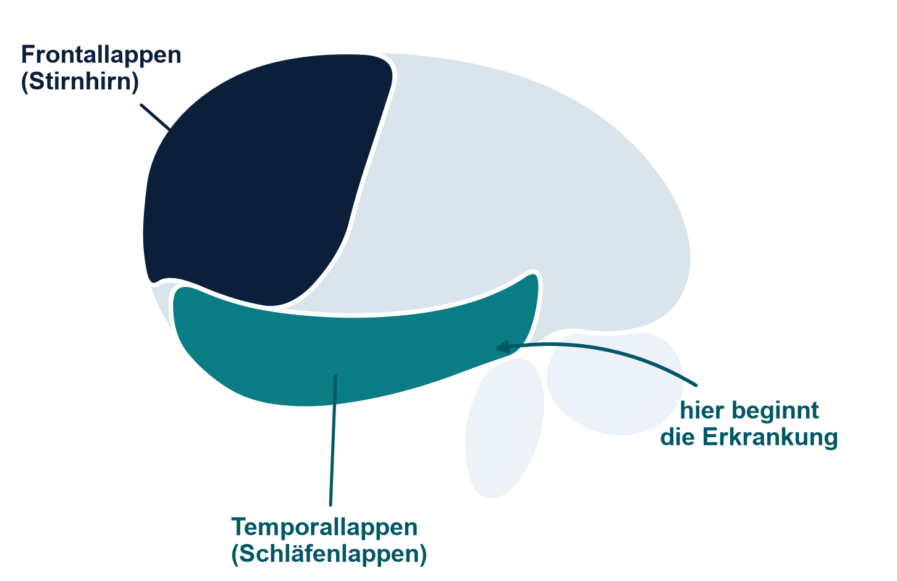
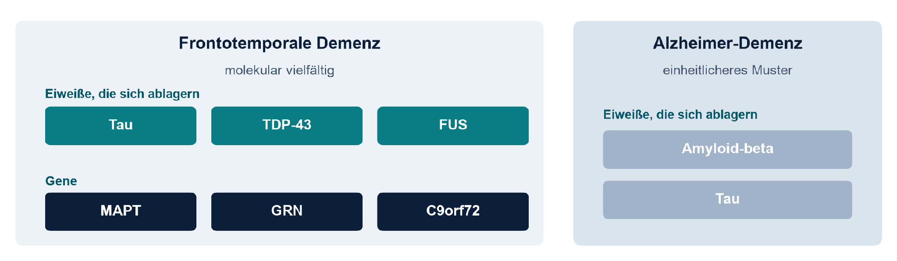
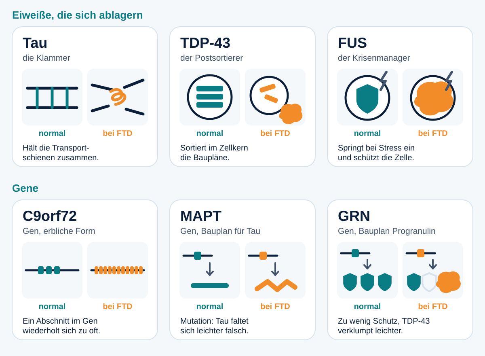
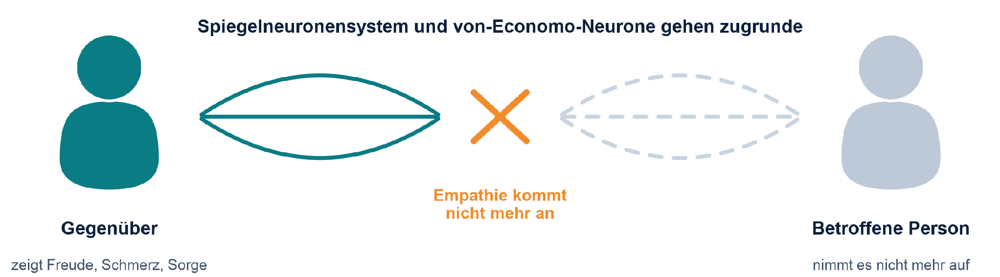
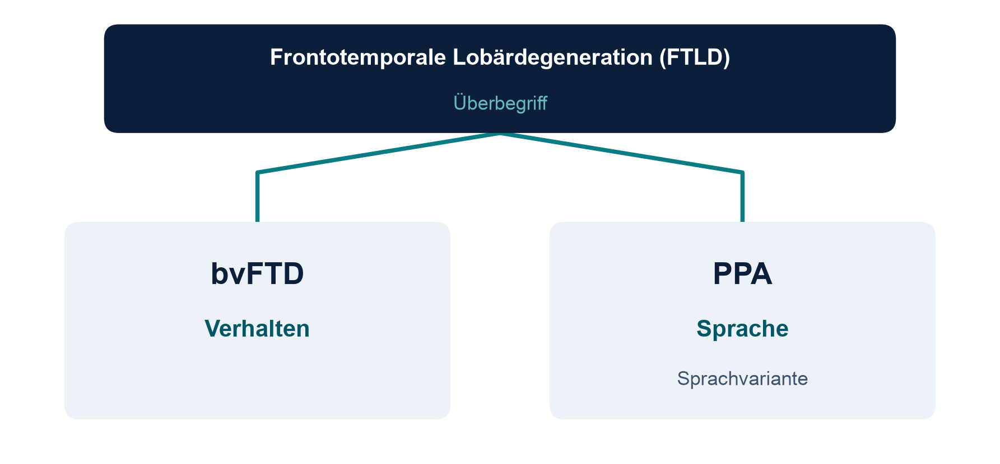
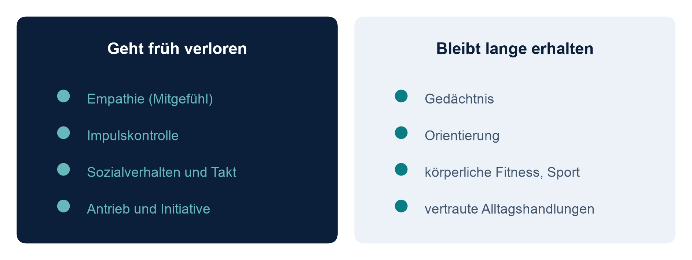
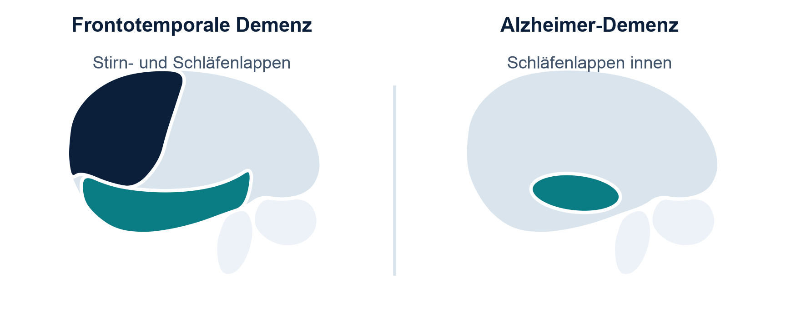
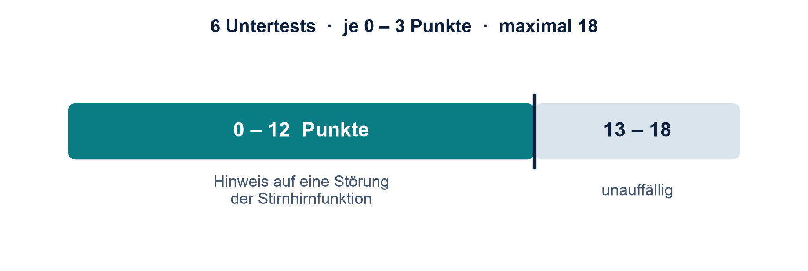
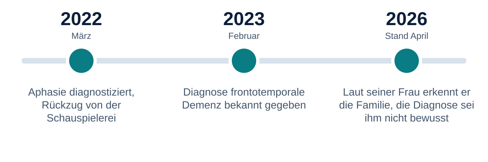

Die frontotemporale Demenz, kurz FTD, beginnt nicht mit Vergesslichkeit, sondern mit einer veränderten Persönlichkeit. Zu Beginn stehen meist Veränderungen des Verhaltens und der Persönlichkeit im Vordergrund (Deutsche Alzheimer Gesellschaft [DAlzG], 2023). Genau deshalb wird sie in der Pflege leicht übersehen oder falsch gedeutet. Häufig beginnt die Krankheit bereits vor dem 60. Lebensjahr (DAlzG, 2023), also mitten im Berufsleben und in der Familie.
Ich habe das Thema für eine eigene Ausarbeitung durchgearbeitet und fasse hier zusammen, was ich dazu gelernt habe. Die Zeichnungen sind von mir. Wo etwas meine eigene Einordnung ist oder ein vereinfachtes Bild, schreibe ich das dazu. Die Quellen stehen am Ende.
- Was die frontotemporale Demenz ist
- Was im Gehirn passiert: Eiweiße und Gene
- Wenn der Mensch sich verändert
- Die beiden Hauptformen
- Was lange erhalten bleibt
- Frontotemporale Demenz oder Alzheimer?
- Wie die Diagnose gestellt wird
- Was man dagegen tun kann
- Ein bekanntes Beispiel: Bruce Willis
- Was das für die Pflege bedeutet
- Meine Sicht
- Fachbegriffe im Überblick
- Das Wichtigste in Kürze
- Häufig gestellte Fragen
- Grenzen dieses Beitrags
- Quellenverzeichnis
Was die frontotemporale Demenz ist
Die FTD ist eine neurodegenerative Erkrankung. Das heißt, die Nervenzellen gehen fortschreitend zugrunde. Dabei schwindet Gewebe im Stirn- und im Schläfenlappen, was man Atrophie nennt. In der Bildgebung zeigt sich bei der FTLD ein frontales und temporales Atrophiemuster (Deutsche Gesellschaft für Psychiatrie und Psychotherapie, Psychosomatik und Nervenheilkunde [DGPPN] & Deutsche Gesellschaft für Neurologie [DGN], 2026, S. 125). FTLD steht für frontotemporale lobäre Degeneration. Gemeint ist die Gewebeveränderung, die sich in einer Biopsie oder nach dem Tod nachweisen lässt (DGPPN & DGN, 2026, S. 64).
Der Diagnoseschlüssel ICD-10 beschreibt die Pick-Krankheit, eine Form der FTD, als fortschreitende Demenz mit Beginn im mittleren Lebensalter. Sie ist durch eine frühe, langsam fortschreitende Persönlichkeitsänderung und den Verlust sozialer Fähigkeiten gekennzeichnet (DGPPN & DGN, 2026, S. 62). In Deutschland leben etwa 30.000 Menschen mit einer FTD (DAlzG, 2023).
Wichtig ist, was in diesen Bereichen sitzt. Im Stirnhirn (Frontallappen) liegen Persönlichkeit, Impulskontrolle, Antrieb und Empathie, also das Mitgefühl. Das ist neuroanatomisches Grundwissen und keine Aussage einer einzelnen Quelle. Genau diese Fähigkeiten gehen bei der FTD früh verloren. Das Gedächtnis dagegen bleibt relativ lange gut erhalten (DAlzG, 2023). Auch die Diagnosekriterien nennen als Merkmal ein relativ erhaltenes episodisches Gedächtnis (DGPPN & DGN, 2026, S. 63). Das Gedächtnis liegt also woanders, und deshalb wird die Erkrankung leicht nicht als Demenz erkannt.

Was im Gehirn passiert: Eiweiße und Gene
Die Nervenzellen gehen unaufhaltsam zugrunde. Bislang gibt es keine Therapie, mit der sich die FTD heilen oder stoppen ließe (DAlzG, 2023).
Was sich dabei in den Zellen abspielt, ist vielfältig. In der Leitlinie ist bei den Pathologien, also den Gewebebefunden, unter anderem von FTLD-tau und FTLD-TDP die Rede (DGPPN & DGN, 2026, S. 65). In meiner Ausarbeitung kommt als drittes Eiweiß FUS dazu. Tau, TDP-43 und FUS sind Eiweiße, die sich in den Nervenzellen ablagern können. Bei der genetischen Abklärung nennt die Leitlinie unter anderem die Gene C9orf72, MAPT, GRN, TARDBP und FUS (DGPPN & DGN, 2026, S. 158). Ich habe mir davon MAPT, GRN und C9orf72 angesehen. Gene sind die Baupläne, deren Veränderung die Erkrankung auslösen kann. Bei der Alzheimer-Demenz stehen dagegen Amyloid-beta und Tau im Vordergrund.

Die sechs Namen in Bildern
Die Namen klingen kompliziert. Ich habe mir deshalb für jeden ein Bild gemacht. Das sind vereinfachte Vergleiche von mir und keine genaue Darstellung dessen, was in der Zelle abläuft.
Tau ist wie eine Klammer, die die Transportschienen in der Nervenzelle zusammenhält. Ohne diese Klammer fällt das Transportsystem auseinander.
TDP-43 sitzt im Zellkern und sortiert die genetischen Baupläne, damit die Zelle die richtigen Eiweiße herstellt. Man kann es sich wie einen Postsortierer im Hauptquartier vorstellen.
FUS macht im Prinzip dasselbe wie TDP-43, springt aber vor allem bei Stress als eine Art Krisenmanager ein. Es hilft der Zelle, sich in schwierigen Momenten zu schützen.
C9orf72 ist eines der Gene, die bei erblichen Formen eine Rolle spielen. Ein Abschnitt im Gen wiederholt sich dabei krankhaft oft, was die Zelle stört.
MAPT ist das Gen, das den Bauplan für das Tau-Protein liefert. Eine Mutation, also eine Veränderung im Gen, verändert Tau direkt an der Quelle, sodass es sich leichter falsch faltet.
GRN liefert den Bauplan für Progranulin, ein Schutzeiweiß der Zelle. Fehlt davon zu wenig, begünstigt das später die Verklumpung von TDP-43.

Nur in etwa 10 Prozent der Fälle handelt es sich um eine erbliche Form (DAlzG, 2023). Bei Verdacht auf eine erblich verursachte Demenz, zum Beispiel bei frühem Beginn oder einer positiven Familienanamnese, schlägt die Leitlinie vor, eine genetische Beratung und Testung anzubieten. Das ist eine schwache Empfehlung (Empfehlung 52, Empfehlungsgrad B; DGPPN & DGN, 2026, S. 158).
Wenn der Mensch sich verändert
Die Diagnosekriterien der Verhaltensvariante beschreiben, woran man die Veränderung erkennt: eine frühe Enthemmung mit sozial unangemessenem Verhalten oder impulsiven, unüberlegten Handlungen, frühe Apathie, früher Verlust von Empathie und Veränderungen der Ernährungsgewohnheiten (DGPPN & DGN, 2026, S. 63). Mit „früh“ sind die ersten drei Jahre gemeint (DGPPN & DGN, 2026, S. 64).
Zwei Beispiele machen das greifbar. Bei der Enthemmung isst die betroffene Person den ganzen Kuchen auf, obwohl gleich Gäste kommen, weil der Impuls nicht mehr gebremst wird. Bei der Distanzlosigkeit zeigt sich die Enthemmung im Sozialverhalten, bis hin zu sexueller Enthemmung (DGPPN & DGN, 2026, S. 264).
Im Stirnhirn und in der Inselregion liegen Nervenzellen für Mitgefühl und soziales Verstehen. Das sind das Spiegelneuronensystem und die von-Economo-Neurone, also Zellen, die mit reagieren, wenn wir andere Menschen wahrnehmen. Gehen sie zugrunde, verliert der Mensch die Empathie und damit einen Kernteil seiner Persönlichkeit.

Was wie ein Charakterfehler aussieht, ist ein Krankheitszeichen.
Die beiden Hauptformen
- bvFTD, die behaviorale Variante (Verhaltensvariante). Typisch sind Enthemmung (Verlust sozialer Kontrolle), Apathie (Antriebslosigkeit), Empathieverlust und ein verändertes Essverhalten (DGPPN & DGN, 2026, S. 63).
- PPA, die primär progrediente Aphasie. Hier ist von Anfang an die Sprache das Hauptdefizit (DGPPN & DGN, 2026, S. 64). Es gibt mehrere Unterformen. Bei der nicht flüssigen Variante sind das angestrengte, stockende Sprechen und die Sprechapraxie, also die gestörte Planung der Sprechbewegungen, ein Hauptmerkmal (DGPPN & DGN, 2026, S. 65). Bei der logopenischen Variante stehen Wortfindungsstörungen im Vordergrund (DGPPN & DGN, 2026, S. 66).

Die Krankheit beginnt im Durchschnitt zwischen dem 50. und 60. Lebensjahr, die jüngsten Betroffenen erkranken im dritten Lebensjahrzehnt (DAlzG, o. J.). Ein junges Alter schließt eine Demenz also nicht aus.
Was lange erhalten bleibt
Gedächtnis und Orientierung bleiben bei den Erkrankten relativ lange gut erhalten (DAlzG, 2023). Genau das führt in die Irre. Von außen wirkt die Person orientiert, während Persönlichkeit und Sozialverhalten längst verändert sind. Dazu kommt, dass bei den Erkrankten keine Krankheitseinsicht besteht, sie relativ jung sind und sich sprachlich meist gut ausdrücken können. Deshalb kommt es oft zu Fehldiagnosen (DAlzG, 2023).

Frontotemporale Demenz oder Alzheimer?
Beide können ähnlich aussehen. Drei Unterschiede habe ich mir gemerkt:
- Erstsymptom: Bei der FTD stehen am Anfang Persönlichkeit, Verhalten oder Sprache und nicht das Gedächtnis (DAlzG, 2023; DGPPN & DGN, 2026, S. 62).
- Krankheitseinsicht: Die Betroffenen zeigen in der Regel kaum Krankheitseinsicht (DAlzG, o. J.). Die Unfähigkeit, die eigenen Beeinträchtigungen zu spüren, heißt Anosognosie (DGPPN & DGN, 2026, S. 80).
- Bildgebung: Bei einer Alzheimer-Erkrankung sprach in einer Studie ein temporo-mesiales und temporo-parietales Atrophiemuster dafür, bei einer FTLD ein frontales und temporales Muster (DGPPN & DGN, 2026, S. 125). Temporo-mesial heißt an der Innenseite des Schläfenlappens.

Wie die Diagnose gestellt wird
Die Fremdanamnese zählt. Das ist die Befragung von Angehörigen oder anderen Bezugspersonen. Nach den Kriterien muss die Zunahme der Verhaltensänderungen durch Beobachtung oder Fremdanamnese belegbar sein (DGPPN & DGN, 2026, S. 63). Die Leitlinie nennt außerdem, dass eine Fremdanamnese hilft, wenn Betroffene ihre Einschränkungen nicht spüren (DGPPN & DGN, 2026, S. 80).
Für eine wahrscheinliche bvFTD kommen bildgebende Befunde dazu, nämlich eine frontale oder vordere temporale Atrophie im MRT oder CT oder ein Hypometabolismus (verminderter Stoffwechsel) im PET (DGPPN & DGN, 2026, S. 64). Das FDG-PET ist eine Bildgebung des Zuckerstoffwechsels im Gehirn (DGPPN & DGN, 2026, S. 128, 130). Auch ein neuropsychologisches Profil mit Defiziten bei Aufgaben zur Handlungssteuerung gehört zu den Kriterien (DGPPN & DGN, 2026, S. 63).
Am Patientenbett gibt es zusätzlich den FAB-Test. FAB steht für Frontal Assessment Battery, eine Testbatterie für die Stirnhirnfunktion. Er dauert rund 10 Minuten und hat sechs Untertests mit je 0 bis 3 Punkten. Geprüft werden die exekutiven Funktionen, also das Planen, Steuern und Kontrollieren von Handlungen. 12 Punkte oder weniger sprechen für eine Störung der Stirnhirnfunktion. Der MMST (Mini-Mental-Status-Test) bleibt dagegen oft normal, weil er Gedächtnis und Orientierung prüft und auf die Alzheimer-Demenz zugeschnitten ist. Wer also nur den MMST einsetzt, kann die Erkrankung übersehen.

Wichtig für die Abgrenzung: Die Verhaltensstörungen dürfen nicht besser durch eine psychiatrische Diagnose erklärbar sein (DGPPN & DGN, 2026, S. 64). Die Abgrenzung zu Depression oder Schizophrenie ist nicht leicht und erfordert eine umfassende Diagnostik (DAlzG, 2023). Auch Burn-out und Manie werden nicht selten verwechselt (DAlzG, o. J.).
Was wir in der Pflege im Alltag beobachten, gehört zur Fremdanamnese. Das finde ich wichtig, denn darauf stützt sich die Diagnose.
Was man dagegen tun kann
Die FTD ist nicht heilbar (DAlzG, 2023). Die S3-Leitlinie sagt, dass keine pharmakologische Behandlung zur Verbesserung der Kognition (der Denkleistung) bei frontotemporaler Demenz empfohlen werden kann. Das ist ein Statement auf Expertenkonsens-Basis mit 100 Prozent Konsens (Statement 72; DGPPN & DGN, 2026, S. 211). Auch für die Behandlung von Enthemmung gibt es keine durch höherwertige Evidenz gesicherte medikamentöse Empfehlung (Statement 93; DGPPN & DGN, 2026, S. 264).
Unterstützend nennt die Deutsche Alzheimer Gesellschaft (DAlzG, 2023):
- Ergotherapie und bei Sprachproblemen Logopädie (Sprachtherapie), um die Selbstständigkeit länger zu erhalten.
- Neuroleptika (Antipsychotika) bei starker Unruhe und Aggressivität. Sie müssen aber mit großer Vorsicht eingesetzt werden, weil sie häufig deutliche Nebenwirkungen verursachen, zum Beispiel Muskelsteifigkeit oder Müdigkeit.
- Moderne Antidepressiva, die antriebssteigernd und stimmungsausgleichend wirken können.
Ob und wie ein Medikament eingesetzt wird, entscheidet die Ärztin oder der Arzt, nicht dieser Beitrag.
Ein bekanntes Beispiel: Bruce Willis
Ein öffentlich bekanntes Beispiel ist der Schauspieler Bruce Willis. Ich kenne ihn nicht und gebe nur wieder, was ein Artikel der Nachrichtenseite TODAY berichtet (Holohan, 2026, englischsprachig, Stand 30. April 2026):

- Im März 2022 wurde eine Aphasie (Sprachstörung) diagnostiziert, und er gab die Schauspielerei auf, als die Familie das bekannt gab.
- Im Februar 2023 teilte die Familie die Diagnose frontotemporale Demenz mit. Zu den frühen Anzeichen gehörten laut Artikel Kommunikationsschwierigkeiten, vor allem beim Sprechen, also die Aphasie.
- Seine Frau sagte im Januar 2026 in einem Podcast-Interview, ihm sei die Diagnose nicht bewusst. Ob er sich dessen bewusst sei, sei schwer zu sagen. Ob er seine Familie noch erkenne, bejahte sie.
Der Artikel beschreibt ihn weiterhin als sehr mobil und insgesamt in guter gesundheitlicher Verfassung. Das passt zu dem, was ich oben zu den Fehldiagnosen geschrieben habe: Von außen sieht man die Veränderung nicht immer. Der Mensch ist da, aber verändert.
Was das für die Pflege bedeutet
Das Folgende sind meine Überlegungen aus der Ausarbeitung, keine Leitlinienempfehlungen.
Validieren statt korrigieren. Die Gefühlswelt ernst nehmen und das Verhalten nicht richtigstellen.
Struktur geben und Reize klein halten. Eine feste Tagesstruktur und eine übersichtliche Umgebung helfen. Bei Enthemmung deeskalieren statt diskutieren.
Auf die Atmosphäre achten. Ich gehe davon aus, dass Betroffene Stimmung, Tonfall und Zuwendung weiter spüren, auch wenn die Krankheitseinsicht fehlt. Das ist meine Einschätzung und keine Aussage einer Quelle.
Die Angehörigen sehen. Die Belastung für Angehörige von Menschen mit FTD ist meist sehr hoch (DAlzG, 2023). Für mich fühlt es sich wie ein Verlust bei lebendigem Leib an: Der Partner lebt, aber der Mensch, den sie geliebt haben, verändert sich. Das ist meine Einordnung. Die Deutsche Alzheimer Gesellschaft nennt als erste Schritte, sich über das Krankheitsbild zu informieren, Beratung zu suchen und Verwandte, Freunde und Nachbarn möglichst konkret um Hilfe zu bitten. Dazu gibt es Angehörigengruppen, ein geschütztes Forum, die Internetseite frontotemporale-demenz.de und das Alzheimer-Telefon (DAlzG, 2023).
Umgang mit schwierigen Verhaltensweisen
Argumente haben auf die Erkrankten in der Regel keinerlei Wirkung. Die Deutsche Alzheimer Gesellschaft nennt Strategien, die das Verhalten positiv beeinflussen können (DAlzG, 2023):
- Die Situation verändern: offen mit der Krankheit umgehen und um Verständnis bitten, Situationen bewusst umgestalten, zum Beispiel im Restaurant einen Tisch in einer ruhigen Ecke bestellen oder im Theater am Rand sitzen, und die Umgebung übersichtlich gestalten, um eine Reizüberflutung zu vermeiden.
- Das eigene Verhalten verändern: umdenken, denn vermeintlich sinnloses Tun kann für die Erkrankten befriedigend sein, eine klare Tagesstruktur anbieten und Situationen, die schwierig werden können, bewusst vermeiden.
- Den Bewegungsdrang zulassen, gegebenenfalls mit Sicherheit durch technische Hilfsmittel wie GPS-Ortungssysteme.
- Ruhig bleiben und bei Aggressivität gegebenenfalls den Raum verlassen.
Meine Sicht
Wenn jemand auffällig handelt, frage ich mich inzwischen nicht mehr: „Warum macht er das?“ Ich frage: „Was kann er nicht mehr steuern?“ Dann behandle ich den Menschen und nicht sein Symptom.
Bei der frontotemporalen Demenz verändert sich zuerst der Mensch, nicht sein Gedächtnis. Wir sind alle Menschen, nehmen wir jeden so, wie er ist. Das ist meine Meinung und nicht aus den Quellen.
Fachbegriffe im Überblick
| Neurodegeneration | fortschreitender Untergang von Nervenzellen |
|---|---|
| FTLD | frontotemporale lobäre Degeneration, die Gewebeveränderung hinter der FTD |
| Atrophie | Gewebeschwund, Schrumpfen von Hirngewebe |
| bvFTD | behaviorale Variante, die Verhaltensvariante |
| PPA | primär progrediente Aphasie |
| Aphasie | Störung von Sprache und Verstehen |
| Sprechapraxie | gestörte Planung der Sprechbewegungen |
| Anosognosie | kein Bewusstsein für die eigene Erkrankung |
| Enthemmung | Verlust sozialer Kontrolle |
| Apathie | Antriebs- und Interessenverlust |
| Exekutive Funktionen | Planen und Steuern von Handlungen |
| FAB | Frontal Assessment Battery, Test für die Stirnhirnfunktion |
| MMST | Mini-Mental-Status-Test |
| Fremdanamnese | Angaben von Angehörigen oder anderen Bezugspersonen |
| FDG-PET | Bildgebung des Zuckerstoffwechsels |
Das Wichtigste in Kürze
Die frontotemporale Demenz beginnt in der Persönlichkeit und in der Sprache, nicht im Gedächtnis (DAlzG, 2023). Deshalb wird sie oft spät oder falsch erkannt. Enthemmung, Apathie und der Verlust von Empathie sind Merkmale der Erkrankung und kein Charakterfehler (DGPPN & DGN, 2026, S. 63). Die Diagnose stützt sich auf die Fremdanamnese und auf Bildgebung (DGPPN & DGN, 2026, S. 63–64). Der MMST bleibt oft normal, der FAB-Test erfasst die Stirnhirnfunktion besser. Eine Heilung gibt es nicht, und die Leitlinie kann keine Medikamente zur Verbesserung der Denkleistung empfehlen (DGPPN & DGN, 2026, S. 211). Für die Pflege bleibt der einfühlsame Umgang mit der veränderten Persönlichkeit die wichtigste Aufgabe. Das ist meine Einordnung.
Häufig gestellte Fragen
Ist die frontotemporale Demenz erblich?
Nur in etwa 10 Prozent der Fälle handelt es sich um eine erbliche Form (DAlzG, 2023).
Warum wird die FTD oft so spät erkannt?
Es kommt oft zu Fehldiagnosen, weil die Erkrankten keine Krankheitseinsicht haben, relativ jung sind und sich sprachlich meist gut ausdrücken können. Dazu kommt, dass die Abgrenzung zu psychiatrischen Erkrankungen wie Depression nicht leicht ist (DAlzG, 2023).
Kann man die FTD heilen?
Nein. Bislang gibt es keine Therapie, mit der sie sich heilen oder stoppen ließe (DAlzG, 2023).
Grenzen dieses Beitrags
Bild 3 und die Erklärungen zu Tau, TDP-43, FUS, C9orf72, MAPT und GRN sind meine vereinfachten Vergleiche und keine Aussagen einer Quelle. Dass sich Tau, TDP-43 und FUS ablagern können, gebe ich aus meiner Ausarbeitung wieder. Die Leitlinie nennt FTLD-tau und FTLD-TDP (S. 65) und FUS als Gen (S. 158). Die Zahlen zu Häufigkeit und Erblichkeit stammen von der Deutschen Alzheimer Gesellschaft (Flyer, Stand August 2023) und sind keine Studienergebnisse. Das Fallbeispiel stützt sich auf einen englischsprachigen Artikel und gibt keine Gewissheit über den tatsächlichen Verlauf. Die Leitlinie habe ich in der Version 6.1 vom 27.04.2026 genutzt, sie ist ab 24.02.2026 bis voraussichtlich 23.02.2027 gültig (DGPPN & DGN, 2026, S. 361).
Quellenverzeichnis
- Deutsche Alzheimer Gesellschaft e. V. (o. J.). Frontotemporale Demenz. https://www.deutsche-alzheimer.de/demenz-wissen/frontotemporale-demenz (abgerufen am 18.11.2026)
- Deutsche Alzheimer Gesellschaft e. V. Selbsthilfe Demenz. (2023). Frontotemporale Demenz – FTD [Flyer, Stand August 2023]. https://www.deutsche-alzheimer.de/fileadmin/Alz/pdf/Flyer_und_Dokumente/FTD_flyer.pdf (abgerufen am 18.11.2026)
- Deutsche Gesellschaft für Psychiatrie und Psychotherapie, Psychosomatik und Nervenheilkunde & Deutsche Gesellschaft für Neurologie. (2026). S3-Leitlinie Demenzen: Living Guideline – Langfassung (Version 6.1, Fassung vom 27.04.2026, AWMF-Registernr. 038-013). https://register.awmf.org/de/leitlinien/detail/038-013 (abgerufen am 27.10.2026)
- Holohan, M. (2026, 30. April). How is Bruce Willis’ health? The latest family updates on his dementia diagnosis. TODAY. https://www.today.com/health/disease/bruce-willis-health-rcna99998 (abgerufen am 18.11.2026) (englischsprachig)
Die Seitenangaben der Leitlinie beziehen sich auf die Seitenzahlen der PDF-Fassung. Der Artikel von TODAY war zum Abruf als „aktualisiert am 30. April 2026“ gekennzeichnet.
Hinweis: Dieser Beitrag dient der allgemeinen fachlichen Information und Bildung. Er ist keine Pflegeberatung im Sinne des § 7a SGB XI (individuelle Beratung und Hilfestellung durch einen Pflegeberater oder eine Pflegeberaterin) und keine ärztliche Beratung. Er ersetzt weder die Beratung durch Fachpersonen noch die Anweisungen der Pflegefachkraft oder der Ärztin oder des Arztes vor Ort. Pflegeberatung erhältst du bei deiner Pflegekasse.
Weiterlesen: Wenn die Fassade bricht, Über sie reden, mit ihnen reden und Essen bei Demenz. Alle Beiträge findest du im Blog.